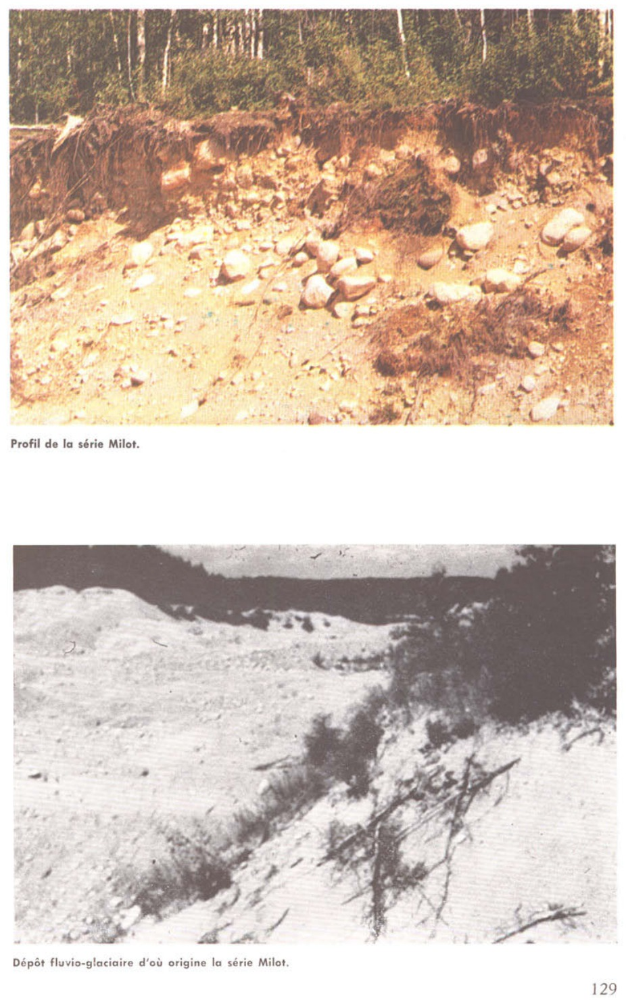

Identification & Caractéristiques Générales
La série Milot s'est développée sur des dépôts meubles d'origine fluvio-glaciaire, incluant des formations d'eskers, de kames-terrasses et de cônes de déjection constitués de sables gravelo-caillouteux. Ces formations géomorphologiques marquent généralement la transition entre le plateau laurentien et les plaines basses, se positionnant en bordure du bouclier ou le long des axes hydrographiques majeurs issus des vallées glaciaires, notamment dans les régions du Saguenay–Lac-Saint-Jean. La topographie caractéristique de cette série se compose de reliefs en coteaux prononcés, générant des pentes dont le degré d'érosion hydrique et éolienne est évalué de modéré à sévère.
Le profil pédologique montre un drainage naturel bon à excessif, favorisé par une texture grossière à prédominance sableuse et une forte pierrosité en surface comme en profondeur. La perméabilité verticale est élevée, ce qui induit une sécheresse estivale prononcée (aridité) liée à une faible capacité de rétention en eau utile. Chimiquement, les sols de cette série affichent une réaction fortement acide. Le profil présente la séquence morphologique typique d'un podzol, caractérisée par une litière forestière mince surmontant un horizon éluvié blanchâtre et un horizon spodique d'accumulation de sesquioxydes et de matière organique.
En raison de la pierrosité excessive, de la topographie accidentée, de l'acidité marquée et du déficit hydrique chronique, les sols de la série Milot présentent des limitations agronomiques sévères et sont généralement impropres à la mise en valeur agricole. L'utilisation de ces terres est confinée à la sylviculture ou au maintien du couvert forestier naturel, composé principalement de peuplements de trembles, de bouleaux blancs, de merisiers et de sous-bois à prédominance de ericacées. Toute tentative de mise en culture y est fortement déconseillée en raison des risques élevés de dégradation structurale et d'érosion consécutifs au défrichement.
Caractères Distinctifs & Morphologie Génétique (Comté de Chicoutimi — Page 97)
- Topographie : en coteauxDrainage:bonGrand-groupe génétique:podzolDegré d'érosion:modéré à sévère (W2-W3-D2-D3)Classe d'utilisation:5Association géographique:séries Honfleur, Tremblay, Duclos; affleurements rocheux, etc.Végétation naturelle:trembles, bouleaux, petits merisiers, saules; bleuets, etc.
Classification Taxonomique & Environnement Pédologique
| Ordre Pédologique | Podzolique |
|---|---|
| Grand Groupe (SCSS) | Podzol humo-ferrique |
| Sous-Groupe Taxonomique | Podzol humo-ferrique à orstein |
| Famille Pédologique | Squelettique-sableuse, mixte sableux, acide |
| Mode de Dépôt Parental | Fluvio-glaciaire |
| Classe de Drainage Naturel | Bien drainé |
| Régime Thermique & Humidité | Frais / Subhumide |
Description Morphologique du Profil Type
Séquence génétique des horizons pédologiques caractérisant le profil type représentatif de la série Milot :
Profil représentatif — Pédologie de la région du Lac-Sa
✓ Source : Pédologie de la région du Lac-Sa — Page 128Couleur Munsell : Non précisée
Structure & Consistance : Polyédrique à granulaire
Description morphologique : Tourbe fibro-ligneuse; pH: 4.6.
Couleur Munsell : 5YR 7/2
Structure & Consistance : Polyédrique à granulaire
Description morphologique : Sable loameux gris-rose (5YR 7/2); pH: 4.2.
Couleur Munsell : 2.5YR 4/6
Structure & Consistance : Polyédrique à granulaire
Description morphologique : Sable rouge (2.5YR 4/6). souvent avec gravier; se concrétionne en ortstein; pH: 5.0.
Couleur Munsell : 5YR 5/8
Structure & Consistance : Polyédrique à granulaire
Description morphologique : Sable graveleux rouge-jaune (5YR 5/8); pH: 4.9.
Couleur Munsell : 10YR 6/6
Structure & Consistance : Polyédrique à granulaire
Description morphologique : Sable graveleux jaune-brun (10YR 6/6); pH: 5.0.
Couleur Munsell : 10YR 6/4
Structure & Consistance : Polyédrique à granulaire
Description morphologique : Sable gravelo-caillouteux brun-jaune clair (10YR 6/4); cailloux de toutes dimensions et stratifiés; pH: 5.1.
Profils Photographiques & Planches de Terrain
Documents iconographiques, figures pédologiques et coupes de terrain documentées dans les mémoires d'inventaire pour de la série Milot :

Propriétés Physico-Chimiques & Analyses de Laboratoire
Données Analytiques de Laboratoire
Aucune analyse physico-chimique quantitative de laboratoire (granulométrie par sédimentométrie, pH H₂O/CaCl₂, matière organique Walkley-Black ou bases échangeables) n'a été consignée pour cette unité dans les archives historiques numérisées ou les bases contemporaines EESSAQ/MAPAQ.
Particularités Régionales, Phases & Variantes Pédologiques
Déclinaisons régionales, faciès texturaux, phases d'érosion ou de pierrosité et variantes cartographiées par étude pour de la série Milot :
| Étude Régionale | Symbole | Appellation / Phase / Variante | Différenciation avec la série type (Analyse pédologique) |
|---|---|---|---|
| Comté de Chicoutimi | Ml |
Milot sable graveleux et caillouteux | Modalité modale de référence (type de base de la série). |
| Pédologie de la région du Lac-Saint-Jean | Ml |
Milot sable graveleux et caillouteux | Conforme à la série type de référence (caractéristiques texturales et drainage identiques). |
Distribution Pédo-Paysagère & Représentativité Cartographique (Couverture PPS 2026)
- Affleurements rocheux (ARR) — co-occurrente dans 88 polygone(s)
- Honfleur sable graveleux (HFU) — co-occurrente dans 54 polygone(s)
- Tremblay loam sableux caillouteux (TMY) — co-occurrente dans 48 polygone(s)
Aptitudes Agronomiques, Hydropédologie & Conservation des Sols
Indicateurs Hydropédologiques & Vulnérabilité à l'Érosion (BDHP 2026)
Interprétation BDHP : Potentiel de ruissellement modérément faible. Infiltration modérée avec textures moyennes à modérément grossières.
Classement selon l'Inventaire des Terres du Canada (ITC / CLI) : Classe 3m.
- Potentiel agricole : Terroir adapté aux cultures régionales selon la texture dominante et la régie de drainage.
- Contraintes majeures : Bien drainé. Risque d'engorgement temporaire ou d'excès d'eau printanier.
- Gestion & Aménagement : Drainage souterrain ou superficiel préconisé sur les terres planes. Chaulage et apport organique régulier selon les bilans agronomiques.
- Cultures adaptées : Grandes cultures (maïs, soya, céréales), prairies fourragères et cultures maraîchères selon le contexte géomorphologique.